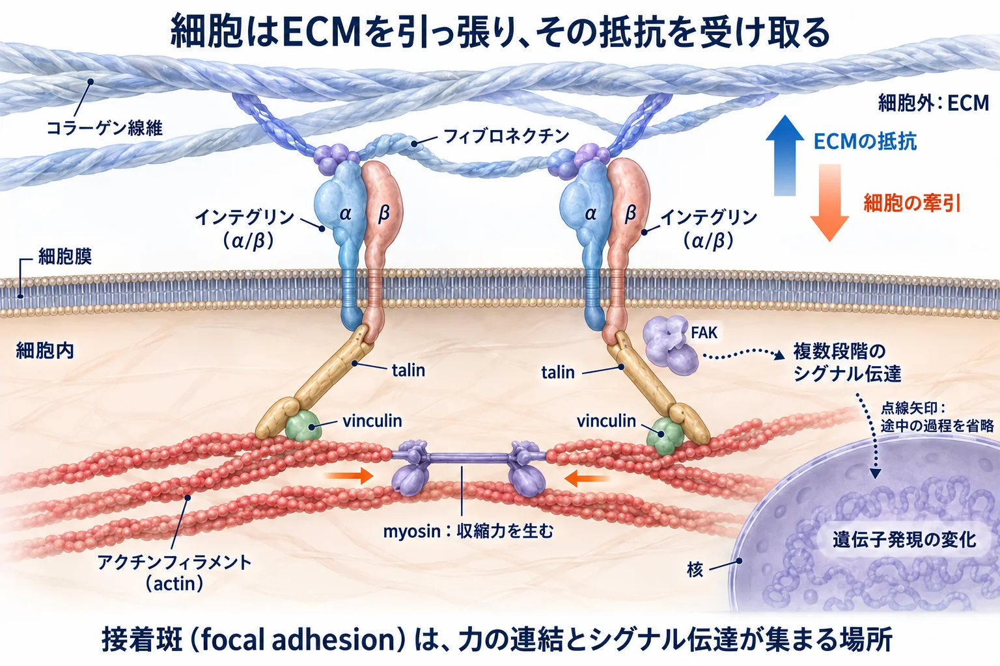
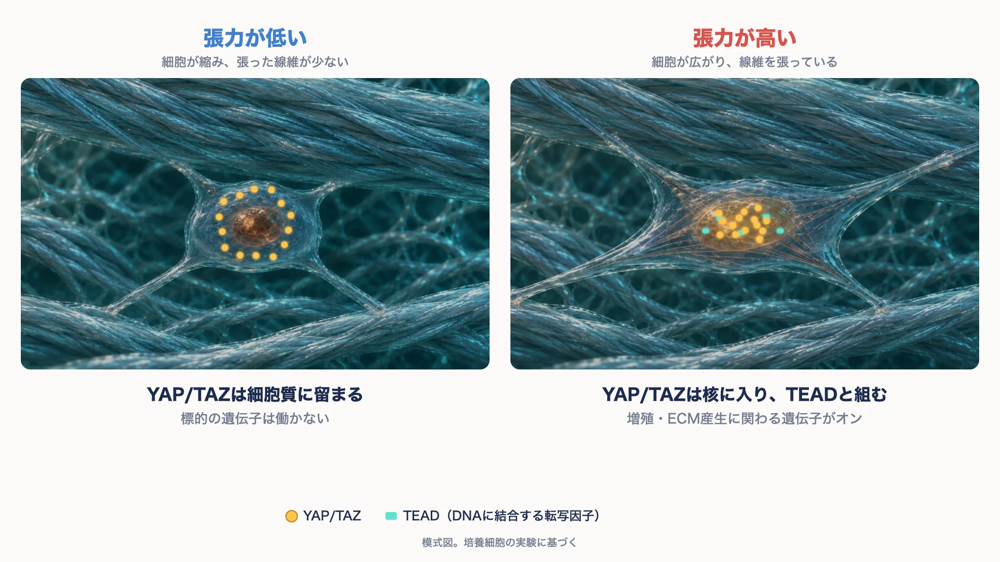
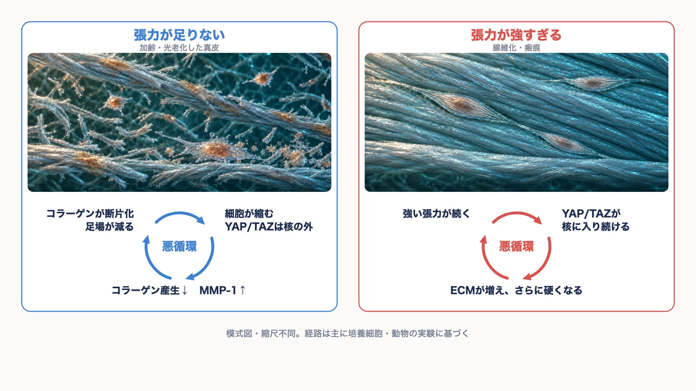

美容皮膚科 ／ 組織の生化学
張力と細胞：mechanotransductionmechanotransduction
公開 2026-11-04 ／ 最終更新 2026-11-06
真皮の線維芽細胞は、コラーゲン線維に付着し、細胞の中で生み出す力で線維を引っ張っています。線維がその力を受け止めると、細胞の中にも張力がたまります。細胞はこの張力を手がかりに、増殖するか、ECMをどれだけ作るかを決めています。この章では、力が細胞に受け取られ、遺伝子の働きへ変わるまでの流れを、関わる分子の分担とともに扱います。力の入口には、ECMとの付着部（接着斑）のほかに、膜の張力で開くチャネル（PIEZO1）もあります。ECMの成分と、ECMが細胞の接着や成長因子の保持を支える仕組みは細胞外基質（ECM）で扱います。
この章の一言
線維芽細胞は、ECMに付着して自ら引っ張り、ECMの抵抗でたまる張力を読み取って、増殖やECMを作る量を決めています。張力が足りなくても、強すぎても、その調節は悪循環に傾きます。
1 張力は、細胞が引く力とECMの抵抗でたまる
mechanotransduction（メカノトランスダクション）は、硬さや張力などの力学的な刺激を、細胞の中の生化学的なシグナルに変える仕組みです。
細胞の中には、actin（アクチン）線維とmyosin（ミオシン）からなるactomyosinという収縮系があります。myosinがactin線維をたぐり寄せると、actinの束全体が短くなります。細胞がECMに付着した状態でこの収縮が起こると、細胞は付着した線維を引っ張ります。
線維がその力に抵抗すると、細胞も同じ強さで引き返され、細胞の中の骨格と付着部に張力がたまります。張力は、引き合う両側に同時にかかる力です。ECMが抵抗しなければ、細胞がいくら縮もうとしても張力はたまりません。
細胞にかかる張力には、もう一つの出どころがあります。皮膚が引き伸ばされると、コラーゲンの網が細胞を外から引っ張ります。創の縁にかかる力や、組織が内側から押し広げられたときの力がこれにあたります。細胞の中で生まれる力と、組織から加わる力は、どちらも同じ付着部を通って細胞に伝わります。
硬さは「力を加えたときの変形しにくさ」で、張力は「引っ張り合っている力」です。硬い基質ほど細胞の引く力を受け止めるので、張力はたまりやすくなります。ただし、細胞が受け取る張力は硬さだけでは決まらず、付着できる場所の数や、細胞が広がれる範囲にも左右されます。
2 力を受け取る：接着斑
細胞がECMに付着する場所をfocal adhesion（接着斑）と呼びます。ここでは、ECMと細胞の中の骨格を物理的につなぐ分子と、シグナルを出す分子が集まっています。

- integrin（インテグリン）：α鎖とβ鎖の組で細胞膜を貫く受容体です。細胞の外ではfibronectin（フィブロネクチン）などを介してコラーゲンに結合し、細胞の中ではtalinにつながります。
- talin（タリン）：integrinとactin線維をつなぐ棒状のタンパク質です。
- vinculin（ビンキュリン）：talinとactinの連結を補強します。
- FAK（focal adhesion kinase）：接着部で働くリン酸化酵素です。力を伝える連結そのものではなく、接着に伴う変化を、移動・増殖・生存などのシグナルへつなぎます。
張力がかかると、talinの一部がほどけて、vinculinが結合できる部位が現れます。vinculinが結合すると連結が補強されます。del Rioら, 2009 さらに、周りの膜にあるintegrinや関連分子がその場所に集まり、接着斑は大きくなります。力が強いほど、接着斑はしっかりした構造になります。
3 引く力を作る：RhoA–ROCK–actomyosin
RhoAは、細胞に「縮め」という合図を出す分子スイッチです。GTPという分子が結合するとオンになり、GDPに変わるとオフになります。オンになったRhoAはROCKという酵素を働かせ、ROCKはmyosinを収縮しやすい状態にします。同時に、actin線維を太い束（stress fiber：ストレスファイバー）にまとめる反応も進みます。
その結果、細胞は付着した線維をより強く引き、ECMが抵抗する限り張力が高まります。張力が高まると接着斑はさらに補強されます。接着斑を介した入力と、RhoAによる収縮は、互いを強め合う関係にあります。
詳しく：FAKとRhoAは一直線の経路ではない
教材や製品資料では「integrin→FAK→RhoA→YAP/TAZ」と一列に描かれることがありますが、実際の関係はもっと複雑です。
FAKは、RhoAを抑える方向にも、促す方向にも働きます。FAKを欠くマウス線維芽細胞では、fibronectinに接着した直後に見られるRhoAの一過性の抑制が起こらず、RhoAが持続的に活性化しました。Renら, 2000 一方で、FAKに結合するp190RhoGEFは、接着によるRhoAの活性化と接着斑の形成を促しました。Limら, 2008
FAKからYAPへは、RhoAと張力を介する経路とは別に、FAK–Src–PI3Kを介する経路も報告されています（乳腺上皮の細胞株）。Kim・Gumbiner, 2015 この章では、integrinからの入力を「FAKなどのシグナル」と「RhoAによる張力」の並列として扱います。
4 張力を遺伝子の言葉に変える：YAP/TAZ
YAP/TAZは、TEADと組んで遺伝子をオンにする
YAP（Yes-associated protein）とTAZ（WWTR1）は、よく似た2つのタンパク質で、ほぼ同じ働きをするためYAP/TAZとまとめて呼びます。自分ではDNAに結合できず、DNAに結合する転写因子TEADと組んで、はじめて遺伝子の転写を促します。このように転写因子を助ける分子を転写共役因子と呼びます。
YAP/TAZの働きは、細胞の中のどこにいるかで決まります。
- 核にいる：TEADと組み、増殖やECM産生に関わる遺伝子の転写を促します。
- 細胞質にいる：遺伝子に作用できません。リン酸化されて細胞質に留められ、やがて分解されます。

張力が続くと、YAP/TAZは核に集まる
培養細胞では、硬い基質の上で細胞が十分に広がり、張力を保てる条件で、YAP/TAZが核に集まります。柔らかい基質の上や、広がれる面積を狭く制限した条件では、細胞質に留まります。硬い基質の上でも、actinの重合やmyosinの働き、RhoAを薬剤で止めて張力を抜くと、YAP/TAZは細胞質に戻りました。Dupontら, 2011
つまり、YAP/TAZが核に入るには、張力が続いていることが必要です。一瞬の力より、細胞が置かれた力学的な環境が持続していることが、この応答の入力になります。
張力がどう核まで伝わるかについては、核が押されて核膜孔が広がるという説が有力です。張力が核膜の複合体（LINC複合体）を介して核に伝わると、核が平たくなり、核膜孔が引き伸ばされて、YAPが核に取り込まれやすくなります。Elosegui-Artolaら, 2017
詳しく：核膜孔の説と、そのほかの機序
Elosegui-Artolaらは、マウス胎児線維芽細胞などを用いて、基質が約5 kPaより硬いと核が細胞骨格と力学的につながり、YAPの核への取り込みが速くなることを示しました。細胞骨格の働きを止めた条件でも、原子間力顕微鏡で核を直接押すとYAPが核に入り、力を外すと戻りました。核の「平たさ」がYAPの核への蓄積と最もよく相関し、電子顕微鏡では硬い基質で核膜孔が大きく見えました。Elosegui-Artolaら, 2017
ただし、これだけで説明が尽きるわけではありません。線維芽細胞では、核への取り込みより、核から外へ出る輸送の抑制が中心だとする報告もあります。Egeら, 2018 柔らかい基質では、Hippo経路のLATSというリン酸化酵素がYAP/TAZを抑えるという報告もあります。Mengら, 2018 核膜孔の実験は主にYAPで行われており、TAZについての検討は限られています。張力による調節には、LATSを介さない経路と介する経路の両方が関わると考えられます。
線維芽細胞で何が変わるか
線維芽細胞のYAP/TAZの代表的な標的は、CCN2（CTGF）です。CCN2は細胞の外へ分泌され、ECMの産生や線維化を後押しします。YAP/TAZは、TGF-βへの反応のしやすさも左右します。初代培養のヒト真皮線維芽細胞でYAPとTAZを両方減らすと、TGF-βのシグナルを抑える分子（Smad7）が増え、TGF-βの作用が弱まりました。Qinら, 2018
YAP/TAZがコラーゲン遺伝子だけを直接動かすというより、CCN2やTGF-βの経路を通して、ECMを作る態勢を整えると考えると、ほかのシグナルとの関係が分かりやすくなります。
登場人物の分担
| 役割 | 分子 | たとえ |
|---|---|---|
| ECMに付着する | integrin（＋fibronectinなど） | 手 |
| 力を受けて形が変わり、連結を補強する | talin・vinculin | 手首のばね |
| 付着に伴うシグナルを出す | FAK・Src | 手首のセンサー |
| 引く力を作る | RhoA → ROCK → actomyosin | 筋肉 |
| 張力を読み取り、遺伝子に伝える | YAP/TAZ（＋TEAD） | 張力計を読んで、工場に指示を出す人 |
| 別の系統から産生を強く促す | TGF-β → SMAD | 現場監督からの直接の命令 |
詳しく：もう一つの読み取り役、MRTF
actinの骨格の状態を読み取る転写共役因子には、MRTF（MRTF-A、MKL1とも呼ぶ）もあります。MRTFは、重合していないactin（G-actin）に結合して細胞質に留められています。RhoAの働きでactinの重合が進み、G-actinが減ると、MRTFは核に移り、転写因子SRFと組んで遺伝子の転写を促します。Mirallesら, 2003
ヒト肺線維芽細胞では、硬い基質でMRTF-Aが核に移り、筋線維芽細胞の目印であるα-SMAが増えました。Huangら, 2012 強皮症の皮膚では、線維芽細胞のMRTF-Aが核に多く局在し、培養した細胞でMRTF-Aを抑えると、収縮やI型コラーゲン・CTGFの産生が下がりました。Shiwenら, 2015
5 もう一つの入口：膜の張力で開くチャネル PIEZO1
細胞が力を感じる入口は、接着斑だけではありません。細胞膜そのものが引き伸ばされると開くイオンチャネルがあり、その代表がPIEZO1です。2010年に同定され（Costeら, 2010）、触覚を担うPIEZO2とともに、2021年のノーベル生理学・医学賞の対象になりました。PIEZO1は主に内皮細胞・赤血球・上皮細胞・線維芽細胞・免疫細胞などで働き、PIEZO2は感覚神経で触覚や固有感覚を担います。
PIEZO1は、3枚の長い羽根が中央の孔を囲む三量体のチャネルです。ふだんは羽根が膜をお椀のように曲げて閉じており、膜が引き伸ばされて平らになると、孔が開くと考えられています（Guo・MacKinnon, 2017）。開いた孔からはカルシウムイオン（Ca²⁺）などが流れ込み、細胞はミリ秒単位で力を化学的な信号に変えます。接着斑から核へ伝わる経路が、続く張力を時間をかけて読み取るのに対し、PIEZO1は膜にかかった力を瞬時に読み取る入口です。
流れ込んだCa²⁺は、カルシニューリン/NFAT、YAP、β-カテニンなどを動かして、遺伝子の働きを変えます（Zhouら, 2020、マウスの骨）。培養細胞では、PIEZO1が接着斑に集まり、細胞自身が引く力でも局所的に開くことが示されており、二つの入口は独立ではなく互いに影響します（Yaoら, 2022・Ellefsenら, 2019）。
皮膚では、PIEZO1は力に合わせて組織を保つ働きをしています。上皮では、引き伸ばされると細胞の分裂を促し、混み合うと余分な細胞を押し出します（Gudipatyら, 2017、培養上皮）。マウスでは、皮膚を伸ばし続けたときに表皮が増える反応にPIEZO1が関わりました（Xueら, 2025）。一方で、同じ働きが場面によっては裏目に出ます。マウスでは、表皮のPIEZO1が傷を閉じる細胞の移動を遅らせました（Holtら, 2021）。肥厚性瘢痕の筋線維芽細胞ではPIEZO1が多く、伸展によるCa²⁺の流入が瘢痕の形成に関わることが、ヒトの組織とラットで報告されています（Heら, 2021）。ケロイドの線維芽細胞では、PIEZO1から入ったCa²⁺がYAPを核へ移し、基質の産生を促す経路が、培養細胞とケロイドを移植したマウスで示されています（Liaoら, 2025）。ただし、ケロイドの線維芽細胞では、PIEZO1を活性化すると性質が抑えられたという逆向きの報告もあり、刺激の強さや続き方で結果が変わる可能性があります（Jiangら, 2024）。
ヒトでは、PIEZO1の遺伝子変異で、全身のリンパ浮腫（全身性リンパ管異形成）や、赤血球が脱水する遺伝性乾燥赤血球症が起こります（Fotiouら, 2015・Zarychanskiら, 2012）。PIEZO1がヒトの体の働きに欠かせないことを示す証拠です。
詳しく：骨と全身の老化、美容機器・化粧品との関係
骨：骨芽細胞と骨細胞は、PIEZO1で体重や運動の負荷を感じ取ると考えられています。マウスでこれを欠損させると骨量と骨の強さが下がり、作動薬でPIEZO1を働かせると骨量が増えました（Sunら, 2019・Liら, 2019）。骨芽細胞のPIEZO1は、骨を壊す破骨細胞を抑える側にも働きます（Wangら, 2020）。さらにマウスでは、骨細胞のPIEZO1を欠損させると全身の老化が早まり、高齢マウスの脛骨に動的な荷重をかけると寿命が約9%延びたという報告があります（Zhangら, 2026）。単一のマウス研究です。一方、骨細胞のPIEZO1を欠損させると骨量は下がるものの、荷重への骨の反応は保たれたとする報告もあり（Liら, 2025）、ヒトへの当てはめは今後の検証を待ちます。顔の骨の加齢とPIEZO1を結んだ研究は見当たりません。
超音波・衝撃波：培養細胞や動物では、低出力パルス超音波や衝撃波の機械刺激がPIEZO1を開き、Ca²⁺の信号を介して骨形成などの反応を変えることが報告されています（Zhang Gら, 2021・Wang Bら, 2024）。ただし、細胞が刺激に応答することと、治療として効くことは別に確かめる必要があります。骨折に対する低出力パルス超音波は、質の高い臨床試験とシステマティックレビューで効果が確認されていません（TRUST, 2016・Searleら, 2023）。
美容機器・注入剤・化粧品：PLLAやRFのあとにPIEZO1の関与を示した動物・培養の研究はありますが、メーカーが関わった少数の報告です。美容用の機器で、皮膚や脂肪のPIEZO1を調べた研究は見当たりません。「PIEZO1を活性化する」とうたう化粧品成分も、ヒトでの臨床データは確認できません。作動薬（Yoda1など）・阻害薬（GsMTx4など）は研究用の試薬で、GsMTx4はPIEZO1だけに効くわけではありません。
6 張力が足りない、強すぎる：2つの悪循環
線維芽細胞は、張力を手がかりにECMを作る量を調節しています。健康な真皮では、ECMの産生と分解が釣り合っています。張力がどちらかに大きく外れた状態が続くと、ECMの変化がさらに張力を外れる方向へ動かす悪循環になります。

張力が足りない：加齢・光老化した真皮
加齢や光老化した真皮では、MMP（マトリックスメタロプロテアーゼ）によってコラーゲン線維が断片化します。線維芽細胞は連続した線維に付着できなくなり、引く力を受け止めてもらえないため、細胞は縮みます。加齢したヒトの皮膚では、線維芽細胞がコラーゲン線維に接する割合と、細胞の広がりが低下していました。Varaniら, 2006 縮んだ細胞ではMMP-1が増え、断片化がさらに進みます。Fisherら, 2009
日光の当たらない臀部の皮膚を、若年の6人と高齢の6人で比べた研究では、高齢者の真皮でYAP/TAZのタンパク質、CCN2、I型procollagenが少なくなっていました。初代培養の真皮線維芽細胞では、細胞を縮ませる操作でYAP/TAZの核移行とCCN2が下がり、核に移行しやすい変異型のYAP/TAZを導入すると回復しました。Qinら, 2022
このため、断片化によって細胞が縮み、YAP/TAZが核に入りにくくなり、コラーゲンの産生が下がる流れが考えられています。ヒトの皮膚で示されているのはYAP/TAZの少なさとの相関で、因果は培養細胞の実験に基づきます。また、この研究は小規模で、主に一つの研究グループの報告です。
加齢した真皮は、コラーゲン線維束1本1本で見ると硬くなっているという測定もあり、著者らはAGE（終末糖化産物）の蓄積によると推定しています。Heら, 2023 線維が硬くなっても、断片化で連続した足場が減れば、細胞は引く力を受け止めてもらえません。組織や線維の硬さと、細胞が受け取る張力は、分けて考えます。ただし、両方を同じ検体で測った研究は見当たらず、この整理には推論が含まれます。断片化と架橋の詳細は線維芽細胞とコラーゲンと糖化とAGEで扱います。
張力が強すぎる：線維化・瘢痕
修復の途中では、線維芽細胞の一部が収縮力の強い筋線維芽細胞になり、ECMを作って創を縮めます（炎症と創傷治癒）。強い張力が続くと、YAP/TAZが核に入り続け、ECMの産生と収縮が続きます。作られたECMで組織はさらに硬くなり、細胞が受け取る張力も高いまま保たれます。
ヒトの肺線維芽細胞では、YAPとTAZを同時に減らすと、ECMの産生・収縮・増殖が下がりました。この効果は、病的に硬い基質の上でだけ見られました。活性型のYAP/TAZを持つ線維芽細胞をマウスの肺に移入すると、線維化が進みました。Liuら, 2015
皮膚では、強皮症の皮膚でTAZ/YAPが多いことが報告されています。Toyamaら, 2018 ケロイド由来の線維芽細胞でもYAP/TAZが多く、減らすと増殖とI型コラーゲン遺伝子の発現が下がりました。Gaoら, 2022 皮膚で「硬さ→YAP/TAZ→さらに硬く」という循環が閉じることを、直接確かめた研究はまだ見当たりません。
この循環には、TGF-βも関わります。細胞が引く力を硬いECMが支えると、ECMに蓄えられた潜在型TGF-βが活性化されやすくなります（細胞外基質（ECM））。
詳しく：マウスの創傷で、張力とYAPが瘢痕を作る細胞を生む
マウスの背部の創では、張力がかかると線維芽細胞の一部でEngrailed-1（En1）という遺伝子が働き始め、瘢痕を作るタイプの線維芽細胞に変わりました。この変化はYAPに依存しており、線維芽細胞でYAPを欠損させると、En1の活性化が抑えられました。創は瘢痕ではなく、毛包などの皮膚付属器を含む、もとの皮膚に近い構造で治りました。Mascharakら, 2021
同じくマウスの肥厚性瘢痕のモデルでは、機械的な負荷がFAKを介して炎症のシグナルを強めており、線維芽細胞でFAKを欠損させると瘢痕が小さくなりました。Wongら, 2012 いずれもマウスの結果で、ヒトの瘢痕で同じ経路を抑えた場合の効果は確かめられていません。
7 臨床につながる：張力の視点で見る
ここでは、臨床で行われていることを張力の視点で整理します。治療としての有効性や適応の判断は、それぞれの治療を扱う章に任せます。
創・瘢痕にかかる張力を減らすことは、張力が強すぎる側の循環を弱める方向に働きます。帝王切開の創に紙テープを12週間貼るランダム化比較試験では、肥厚性瘢痕が減りました。ただし、脱落が多い試験です。Atkinsonら, 2005 張力を減らす機器を用いた試験でも、瘢痕の見た目の改善が報告されています。これらはメーカーが関わった試験で、評価は主に写真による判定です。Longakerら, 2014 ヒトの試験では、張力を減らしたときにFAKやYAP/TAZがどう変わるかは測られていません。
真皮を内側から押し広げることは、張力が足りない側で、細胞を引き伸ばす方向に働きます。光老化した皮膚や高齢者の皮膚に架橋ヒアルロン酸を注入すると、周囲の線維芽細胞が引き伸ばされ、コラーゲンの産生が増えました。Wangら, 2007 臀部の皮膚で調べた研究では、伸びた線維芽細胞でTGF-βの受容体やCCN2の発現が増え、I型procollagenの増加は12週まで続きました。Quanら, 2013 これらの研究でYAP/TAZは測られておらず、YAP/TAZを介するかどうかは推論です。しわなどの見た目の変化も、この研究からは分かりません。
この章の到達点
- 張力は、細胞が生む引く力と、ECMの抵抗の両方でたまります。組織が引き伸ばされる外からの力も、同じ付着部を通って細胞に伝わります。
- 接着斑では、integrin・talin・vinculinが力をつなぎ、FAKなどが付着に伴うシグナルを出します。RhoA–ROCKがactomyosinの収縮を強め、張力を高めます。
- YAP/TAZは、TEADと組んで遺伝子の転写を促す転写共役因子で、働きは居場所で決まります。張力が続くと核に入り、CCN2などを通してECMを作る態勢を整えます。
- 膜の張力で開くチャネルPIEZO1は、Ca²⁺を通して力を瞬時に信号へ変える、もう一つの入口です。皮膚では上皮の増殖や創の閉鎖、瘢痕の線維芽細胞に関わることが、主に動物と培養細胞で示されています。
- 張力が足りない状態（加齢・光老化）と、強すぎる状態（線維化・瘢痕）は、どちらもECMの変化が張力の偏りを強める悪循環になります。ヒトで示されているのは主に相関で、因果は培養細胞と動物の実験に基づきます。
- 創の張力を減らすことや、真皮を内側から押し広げることは、張力の視点で整理できます。有効性は治療の章で扱います。
参考文献
- del Rio A, et al. Stretching single talin rod molecules activates vinculin binding. Science. 2009;323:638–641. PMID: 19179532.
- Ren XD, et al. Focal adhesion kinase suppresses Rho activity to promote focal adhesion turnover. J Cell Sci. 2000;113:3673–3678. PMID: 11017882.
- Lim Y, et al. PyK2 and FAK connections to p190Rho guanine nucleotide exchange factor regulate RhoA activity, focal adhesion formation, and cell motility. J Cell Biol. 2008;180:187–203. PMID: 18195107.
- Kim NG, Gumbiner BM. Adhesion to fibronectin regulates Hippo signaling via the FAK–Src–PI3K pathway. J Cell Biol. 2015;210:503–515. PMID: 26216901.
- Dupont S, et al. Role of YAP/TAZ in mechanotransduction. Nature. 2011;474:179–183. PMID: 21654799.
- Elosegui-Artola A, et al. Force triggers YAP nuclear entry by regulating transport across nuclear pores. Cell. 2017;171:1397–1410.e14. PMID: 29107331.
- Ege N, et al. Quantitative analysis reveals that actin and Src-family kinases regulate nuclear YAP1 and its export. Cell Syst. 2018;6:692–708.e13. PMID: 29909276.
- Meng Z, et al. RAP2 mediates mechanoresponses of the Hippo pathway. Nature. 2018;560:655–660. PMID: 30135582.
- Qin Z, et al. YAP/TAZ regulates TGF-β/Smad3 signaling by induction of Smad7 via AP-1 in human skin dermal fibroblasts. Cell Commun Signal. 2018;16:18. PMID: 29695252.
- Miralles F, et al. Actin dynamics control SRF activity by regulation of its coactivator MAL. Cell. 2003;113:329–342. PMID: 12732141.
- Huang X, et al. Matrix stiffness-induced myofibroblast differentiation is mediated by intrinsic mechanotransduction. Am J Respir Cell Mol Biol. 2012;47:340–348. PMID: 22461426.
- Shiwen X, et al. A role of myocardin related transcription factor-A (MRTF-A) in scleroderma related fibrosis. PLoS One. 2015;10:e0126015. PMID: 25955164.
- Varani J, et al. Decreased collagen production in chronologically aged skin: roles of age-dependent alteration in fibroblast function and defective mechanical stimulation. Am J Pathol. 2006;168:1861–1868. PMID: 16723701.
- Fisher GJ, et al. Collagen fragmentation promotes oxidative stress and elevates matrix metalloproteinase-1 in fibroblasts in aged human skin. Am J Pathol. 2009;174:101–114. PMID: 19116368.
- Qin Z, He T, Guo C, Quan T. Age-related downregulation of CCN2 is regulated by cell size in a YAP/TAZ-dependent manner in human dermal fibroblasts: impact on dermal aging. JID Innov. 2022;2:100111. PMID: 35480397.
- He T, Fisher GJ, Kim AJ, Quan T. Age-related changes in dermal collagen physical properties in human skin. PLoS One. 2023;18:e0292791. PMID: 38064445.
- Liu F, et al. Mechanosignaling through YAP and TAZ drives fibroblast activation and fibrosis. Am J Physiol Lung Cell Mol Physiol. 2015;308:L344–L357. PMID: 25502501.
- Toyama T, et al. Therapeutic targeting of TAZ and YAP by dimethyl fumarate in systemic sclerosis fibrosis. J Invest Dermatol. 2018;138:78–88. PMID: 28870693.
- Gao N, et al. Targeted inhibition of YAP/TAZ alters the biological behaviours of keloid fibroblasts. Exp Dermatol. 2022;31:320–329. PMID: 34623712.
- Mascharak S, et al. Preventing Engrailed-1 activation in fibroblasts yields wound regeneration without scarring. Science. 2021;372:eaba2374. PMID: 33888614.
- Wong VW, et al. Focal adhesion kinase links mechanical force to skin fibrosis via inflammatory signaling. Nat Med. 2012;18:148–152. PMID: 22157678.
- Atkinson JA, et al. A randomized, controlled trial to determine the efficacy of paper tape in preventing hypertrophic scar formation in surgical incisions that traverse Langer's skin tension lines. Plast Reconstr Surg. 2005;116:1648–1656. PMID: 16267427.
- Longaker MT, et al. A randomized controlled trial of the embrace advanced scar therapy device to reduce incisional scar formation. Plast Reconstr Surg. 2014;134:536–546. PMID: 24804638.
- Wang F, et al. In vivo stimulation of de novo collagen production caused by cross-linked hyaluronic acid dermal filler injections in photodamaged human skin. Arch Dermatol. 2007;143:155–163. PMID: 17309996.
- Quan T, et al. Enhancing structural support of the dermal microenvironment activates fibroblasts, endothelial cells, and keratinocytes in aged human skin in vivo. J Invest Dermatol. 2013;133:658–667. PMID: 23096713.
- Coste B, et al. Piezo1 and Piezo2 are essential components of distinct mechanically activated cation channels. Science. 2010;330:55–60. PMID: 20813920.
- Guo YR, MacKinnon R. Structure-based membrane dome mechanism for Piezo mechanosensitivity. eLife. 2017;6:e33660. PMID: 29231809.
- Zhou T, et al. Piezo1/2 mediate mechanotransduction essential for bone formation through concerted activation of NFAT-YAP1-ß-catenin. eLife. 2020;9:e52779. PMID: 32186512.
- Yao M, et al. Force- and cell state-dependent recruitment of Piezo1 drives focal adhesion dynamics and calcium entry. Sci Adv. 2022;8:eabo1461. PMID: 36351022.
- Ellefsen KL, et al. Myosin-II mediated traction forces evoke localized Piezo1-dependent Ca2+ flickers. Commun Biol. 2019;2:298. PMID: 31396578.
- Gudipaty SA, et al. Mechanical stretch triggers rapid epithelial cell division through Piezo1. Nature. 2017;543:118–121. PMID: 28199303.
- Xue Y, et al. The mechanotransducer Piezo1 coordinates metabolism and inflammation to promote skin growth. Nat Commun. 2025;16:6876. PMID: 40715139.
- Holt JR, et al. Spatiotemporal dynamics of PIEZO1 localization controls keratinocyte migration during wound healing. eLife. 2021;10:e65415. PMID: 34569935.
- He J, et al. Mechanical stretch promotes hypertrophic scar formation through mechanically activated cation channel Piezo1. Cell Death Dis. 2021;12:226. PMID: 33649312.
- Liao C, et al. Piezo1-Mediated Calcium Flux Transfers Mechanosignal to Yes-Associated Protein to Stimulate Matrix Production in Keloid. J Invest Dermatol. 2025;145:2869–2881.e9. PMID: 40254148.
- Jiang Z, et al. Low-frequency ultrasound sensitive Piezo1 channels regulate keloid-related characteristics of fibroblasts. Adv Sci. 2024;11:e2305489. PMID: 38311578.
- Fotiou E, et al. Novel mutations in PIEZO1 cause an autosomal recessive generalized lymphatic dysplasia with non-immune hydrops fetalis. Nat Commun. 2015;6:8085. PMID: 26333996.
- Zarychanski R, et al. Mutations in the mechanotransduction protein PIEZO1 are associated with hereditary xerocytosis. Blood. 2012;120:1908–1915. PMID: 22529292.
- Sun W, et al. The mechanosensitive Piezo1 channel is required for bone formation. eLife. 2019;8:e47454. PMID: 31290742.
- Li X, et al. Stimulation of Piezo1 by mechanical signals promotes bone anabolism. eLife. 2019;8:e49631. PMID: 31588901.
- Wang L, et al. Mechanical sensing protein PIEZO1 regulates bone homeostasis via osteoblast-osteoclast crosstalk. Nat Commun. 2020;11:282. PMID: 31941964.
- Zhang Z, et al. Dynamic force sensing by bone delays aging and extends lifespan. Cell Metab. 2026（オンライン先行）. DOI: 10.1016/j.cmet.2026.09.020. PMID: 42914985.
- Li X, et al. Piezo1 expression in mature osteocytes is dispensable for the skeletal response to mechanical loading. Bone. 2025;190:117276. PMID: 39389439.
- Zhang G, et al. Piezo1 channel activation in response to mechanobiological acoustic radiation force in osteoblastic cells. Bone Res. 2021;9:16. PMID: 33692342.
- Wang B, et al. Radial extracorporeal shockwave promotes osteogenesis-angiogenesis coupling of bone marrow stromal cells from senile osteoporosis via activating the Piezo1/CaMKII/CREB axis. Bone. 2024;187:117196. PMID: 39004161.
- TRUST Investigators. Re-evaluation of low intensity pulsed ultrasound in treatment of tibial fractures (TRUST): randomized clinical trial. BMJ. 2016;355:i5351. PMID: 27797787.
- Searle HKC, et al. Ultrasound and shockwave therapy for acute fractures in adults. Cochrane Database Syst Rev. 2023;3:CD008579. PMID: 36866917.
この章の更新
- 節5に、膜の張力で開くチャネルPIEZO1を追加（構造、Ca2+からの下流、皮膚での役割、ヒトの変異、骨と全身の老化・超音波や美容機器との関係は折りたたみ）。模式動画を追加
- 模式動画のナレーションを、YAP/TAZが「ECMの産生や細胞増殖に関わる遺伝子」をオンにする表現に修正（本文の説明と統一）
- 初公開。張力がたまる条件（細胞が生む力とECMの抵抗、外から伸ばされる力）、接着斑とRhoA–ROCK–actomyosin、YAP/TAZの居場所による調節と核膜孔の説、張力が足りない・強すぎる2つの悪循環、臨床との接点を整理。模式動画、YAP/TAZの居場所の比較図、2つの悪循環の図を追加